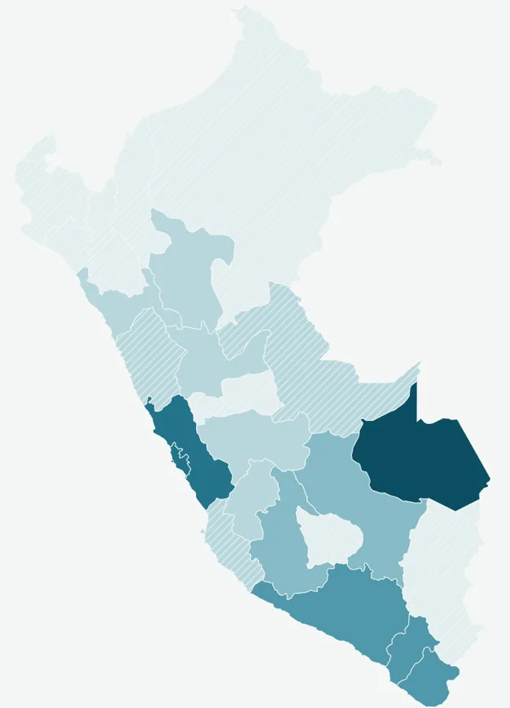

¿Tener red pública garantiza agua segura en el Perú?
¿Qué criterio frena el ODS 6.1.1: la red, la continuidad del servicio o el cloro?
El agua segura cayó de 41,5 % a 36,6 % entre 2019 y 2025: 2,7 millones de personas más sin ella. El cuello de botella es el cloro, no la red.